Running & Fitness Classes
Welcome to Running & Fitness
Running Workout
- Here is the basic formula for a great training plan.
1. Train three days a week.
2. Run or run/walk 20 to 30 minutes, two days a week.
3. Take a longer run or run/walk (40 minutes to an hour) on the weekend.
4. Rest or cross-train on your off days.
5. Run at a conversational pace.
6. Consider taking regular walk-breaks.

Home Workouts
- This at-home routine, as we lay out in our Beginner Bodyweight Workout article, is as follows:
1. Bodyweight squats: 20 reps.
2. Push-ups: 10 reps.
3. Walking lunges: 10 each leg.
4. Dumbbell rows (using a gallon milk jug or another weight): 10 each arm.
5. Plank: 15 seconds.
6. Jumping Jacks: 30 reps.
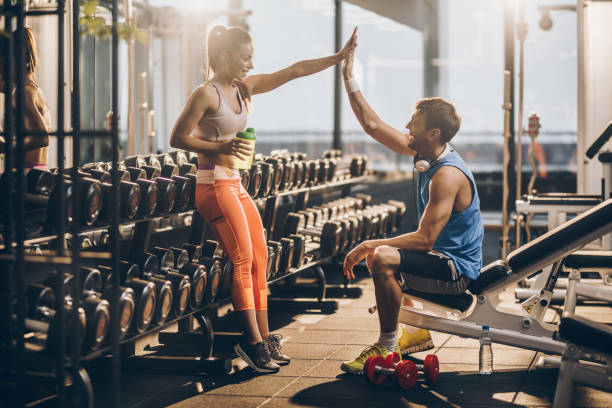
Gym Workout
- Outline A Workout Routine Using This Training Theory.
1. Squats.
2. Stiff-Legged Barbell Deadlift.
3. Lying Leg Curls.
4. Bent-Over Barbell Rows.
5. Shrugs.
6. Shoulder Press.
7. One-Arm Dumbbell Row (Chainsaws)
8. Incline Dumbbell Press.


Indian Army Workout
- Top Intense Exercises Used by the Indian Army
1. Push-Ups. ...
2. Squats. ...
3. Lunges. ...
4. Jumping Jacks. ...
5. Sit-Ups. ...
6. Pull-Ups. ...
7. Planks. Planks are a core exercise that targets the abs and back. ...
8. Running. Running is a full-body exercise that is excellent for building endurance and cardiovascular health.
.jpg)
.jpg)
Fat Loss Workout
- What Is a Good Workout Schedule for Losing Weight?
1. Monday: Strength training.
2. Tuesday: Cardio.
3. Wednesday: Rest.
4. Thursday: Strength training.
5. Friday: Cardio.
6. Saturday: Rest.
7. Sunday: Active recovery (stretch or yoga)
.jpg) 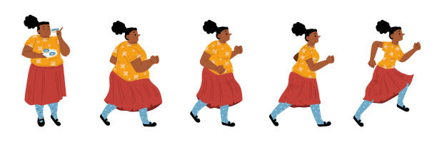
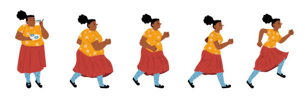
Yoga Class Plan
- Rules for Planning Your Yoga Class
1. Set Your Intention. What is the intention you want for this class? ...
2. Choose A Theme. ...
3. Consider The Demographics of Your Class. ...
4. Think About The Time of Day. ...
5. Find a Piece of Inspiration. ...
6. Choose Your Postures. ...
7. Find a Balance Between Static and Dynamic Poses. ...
8.Allow For Moments of Rest.
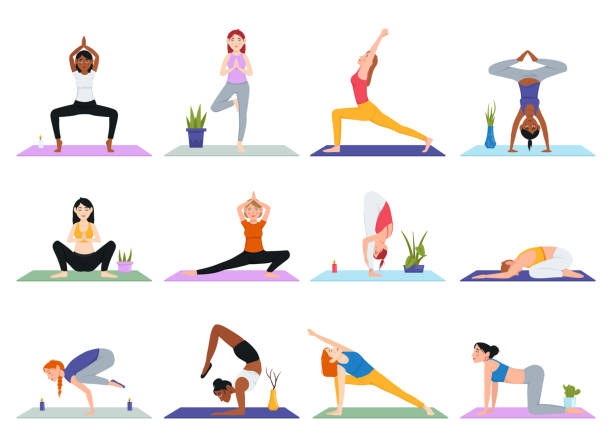
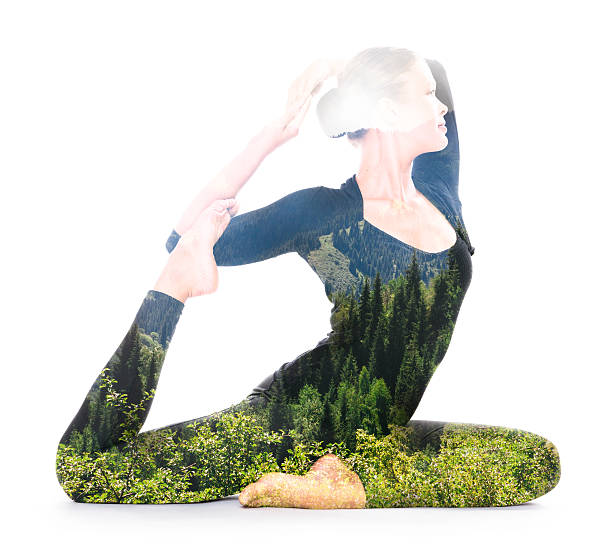
Diet Plan
- The principles of a healthy diet
1. Eat a variety of foods to ensure adequate intake of nutrients.
2. Eat plenty of fruits and vegetables. ...
3. Consume whole grains, nuts and healthy fats rich in unsaturated fatty acids.
4. Reduce the intake of saturated fats. ...
5. Limit sugar intake. ...
6. Cut back on salt. ...
7. Drink water regularly.
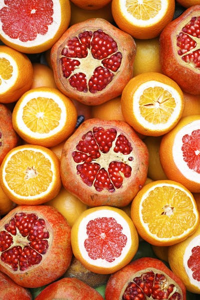

.jpg)
Vegetarian Diet Plan
- Here are some tips to help you get started on a plant-based diet.
1. Eat lots of vegetables. ...
2. Change the way you think about meat. ...
3. Choose good fats. ...
4. Cook a vegetarian meal at least one night a week. ...
5. Include whole grains for breakfast. ...
6. Go for greens. ...
7. Build a meal around a salad. ...
8. Eat fruit for dessert.
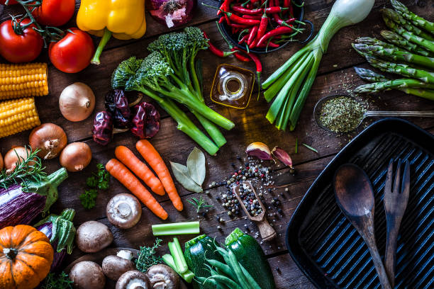
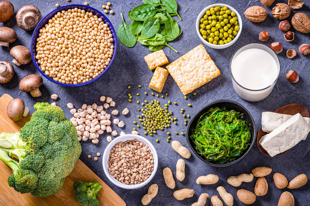
Non Vegetarian Diet Plan
- Here's the list of the top 5 non-vegetarian food items you can include in your diet to support healthy weight loss.
1. almon. This fatty fish contains omega-3 fatty acids, healthy fats, iodine, and several important nutrients. ...
2. Eggs. ...
3. Tuna. ...
4. Lean pork. ...
5. Turkey.
 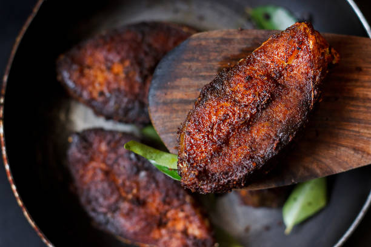
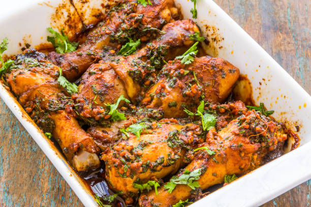
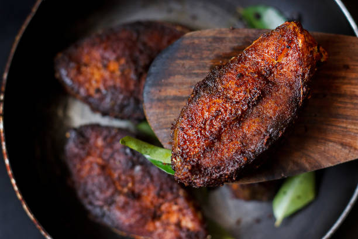
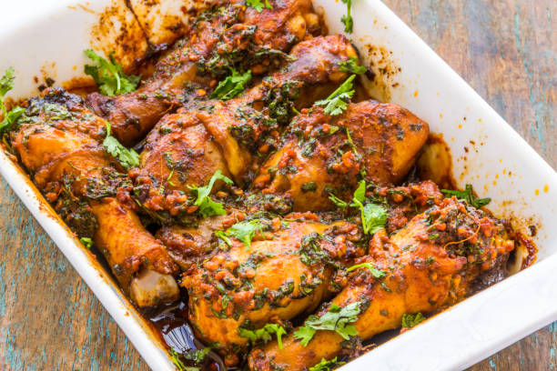
Supplement
- Such a multi-mix has four basic ingredients as follows:
(i) A staple as the main ingredient (i.e. preferably a cereal)
(ii) A protein supplement from a plant or animal food source (e.g. beans, groundnut, milk, meat, chicken, fish, eggs, etc)
(iii) A vitamin and mineral supplement (e.g. a vegetable and / or fruit) ( ...
.jpg)
.jpg)
.jpg)
Medicine
- In general, people take drugs for a few reasons:
1. To feel good. Drugs can produce intense feelings of pleasure. ...
2. To feel better. Some people who suffer from social anxiety, stress, and depression start using drugs to try to feel less anxious. ...
3. To do better. ...
4. Curiosity and social pressure.
.jpg)
.jpg)
.jpg)